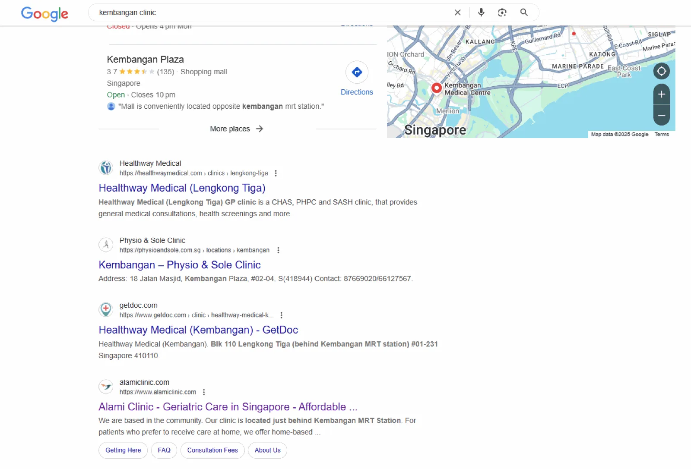
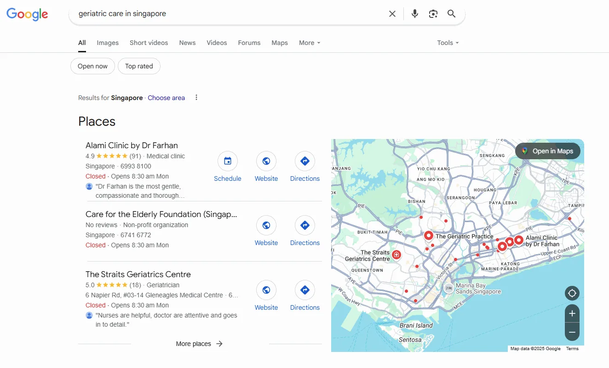

Page 1
Google ranking within 3 months
75%
Organic traffic increase quarter-over-quarter
516
Clicks (custom period)
25K
Impressions on Google
Lower
Bounce rate across top pages


Objective
Improve search visibility and drive organic leads for geriatric care services. The clinic needed to show up when people in Singapore searched for elderly care and neighborhood clinic options.
Strategy
- Focused on keywords like "geriatric care in singapore", "kembangan clinic" and more
- Conducted competitor analysis and positioned content to outrank hospitals and clinics
- Optimized on-page SEO (meta titles, internal links, headers) for each blog
- Fixed all technical issues from the website
- Created content clusters targeting FAQ-rich queries and national health schemes
Execution
The clinic was barely showing up on Google when we started. Most of the traffic was going to larger hospital websites and directory listings. I ran a full audit of the site to catch technical problems first, then moved into content. The blog strategy was built around questions real patients ask, things like eldercare subsidies, health screening options, and clinic services near specific neighborhoods. Each piece of content was structured with proper headers, internal links, and meta data. Within 3 months, the site started ranking on page 1 for several target keywords. Google Search Console showed steady growth in both clicks and impressions over the following quarter.
What the numbers show
Three months to Page 1 was possible because the site was starting from almost nothing: no penalty to recover from, no legacy of bad links, no sprawling architecture. When a site has never really competed, the first correct moves produce visible movement fast. That is a genuinely different situation from clawing back rankings on an established domain.
The 75% traffic increase is on a near-zero base, so the absolute numbers stay small: 516 clicks and around 25,000 impressions. For a single-location clinic that is the right thing to optimise. Ranking for twenty high-intent local queries beats ranking for a thousand informational ones.
What I'd flag
A percentage increase from a standing start flatters easily. I'd rather you read the 516 clicks than the 75%.
Medical content sits in Google's "Your Money or Your Life" category, where trust signals are weighted especially heavily. Much of what worked here (named practitioners, verifiable address, clear treatment scope) is not transferable SEO technique so much as the clinic being willing to publish things most clinics leave off their site.
This is one of five documented SEO engagements on this site. The closest comparison is Hills Harvest, also local SEO from a near-zero base.
Want results like this?
Send me your site and I'll tell you what I'd change first. No cost, no pitch.
Get a free audit